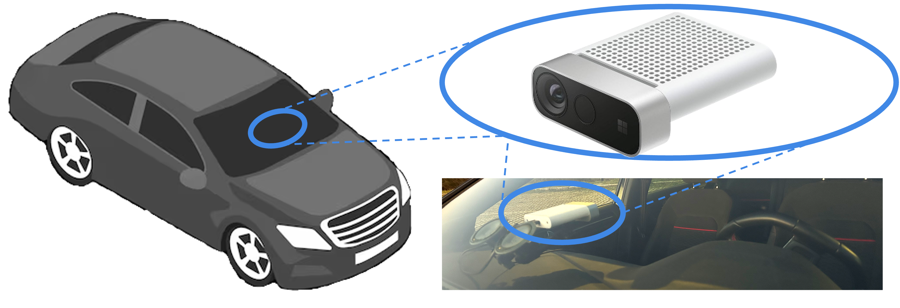

Accurate in-cabin depth estimation is critical for advancing automotive safety and occupant comfort. However, existing datasets for in-vehicle scene understanding tasks often fall short in providing sufficient information and scale needed to evaluate existing depth estimation methods. In this paper, we present a novel benchmark tailored for monocular depth estimation in vehicle interiors, containing both near-infrared (NIR) images and corresponding ground truth depth data. Featuring over 41,000 frames captured across 36 distinct vehicles and 45 different passengers, it offers an unprecedented level of variability for this application domain. Evaluation on our testbench of cutting-edge single-view depth models in different flavors, including zero-shot affine-invariant depth estimation or indomain specialization, reveals that current depth estimation approaches, while promising, still have a significant performance gap to overcome before achieving the reliability required for downstream safety-critical applications. In light of its diverse range and complex scenarios, we believe this benchmark could serve as a common reference for further research concerning in-cabin monocular depth estimation
The dataset comprises 47 scenes (29 recorded at night and 18 during the daytime) featuring 45 people (31 males and 14 females) and 36 cabins. We placed in 10 scenes everyday objects such as bags, jackets, headphones, laptops, mobile phones, and other small personal items. In addition, 4 scenes feature drivers or passengers wearing caps and 14 people wearing glasses or sunglasses.
We collected a total of 41,226 frames and partitioned the scenes as the training set (37 scenes, 32,195 frames) and another part featuring people and vehicles that do not appear in the training set as the testing set (5 scenes each, 4,516 frames). We also define a validation split using 5 other scenes (4,515 frames) containing vehicles and people that may appear in some of the clips in the training set, but in a different setting.
Among real IR datasets sporting a top-frontal setup, CabNIR combines the largest number of cabins and participants with the widest FoV.
| Sequence Name | Model | # of Seats | Ceiling | Front | Back | Camera Pose | Everyday Objs |
|---|---|---|---|---|---|---|---|
| 500_A_1_Night | Fiat 500 | 4 | Glass | Driver Alone | 1 Passenger | Low | ✓ |
| 500_B_1_Day | Fiat 500 | 4 | Soft Top | Driver+Passenger | Empty | High | ✓ |
| 500_C_1_Night | Fiat 500 | 4 | Soft Top | Driver+Passenger | Empty | High | ✓ |
| 500_D_1_Night | Fiat 500 | 4 | Hard Top | Driver Alone | Empty | High | ✗ |
| A1_A_1_Day | Audi A1 | 5 | Hard Top | Driver Alone | Empty | High | ✓ |
| A3_A_1_Day | Audi A3 | 5 | Hard Top | Driver Alone | Empty | High | ✗ |
| A3_A_2_Day | Audi A3 | 5 | Hard Top | Driver+Passenger | Empty | Low | ✓ |
| A3_B_1_Night | Audi A3 | 5 | Hard Top | Driver Alone | Empty | High | ✗ |
| Beetle_A_1_Day | Volkswagen Beetle | 4 | Soft Top | Driver+Passenger | Empty | Low | ✓ |
| Beetle_A_2_Day | Volkswagen Beetle | 4 | Soft Top | Driver+Passenger | 2 Passenger | Low | ✓ |
| Beetle_A_3_Day | Volkswagen Beetle | 4 | Soft Top | Driver Alone | 1 Passenger | Low | ✓ |
| C3_A_1_Night | Citroen C3 | 5 | Glass+Fabric | Driver+Passenger | 1 Passenger | Low | ✗ |
| C3_A_2_Night | Citroen C3 | 5 | Glass+Fabric | Driver+Passenger | Empty | Low | ✗ |
| CLA_A_1_Day | Mercedes CLA | 5 | Hard Top | Driver+Passenger | Empty | Low | ✗ |
| Empty | Fiat 500 | 4 | Soft Top | Empty | Empty | High | ✓ |
| Fortwo_A_1_Night | Smart Fortwo | 2 | Soft Top | Driver Alone | - | Low | ✗ |
| Fortwo_B_1_Night | Smart Fortwo | 2 | Glass | Driver+Passenger | - | High | ✓ |
| Fortwo_C_1_Night | Smart Fortwo | 2 | Hard Top | Driver+Passenger | - | Low | ✓ |
| GX3_A_1_Day | Mazda GX3 | 5 | Hard Top | Driver Alone | Empty | Low | ✓ |
| Golf_A_1_Night | Volkswagen Golf | 5 | Glass | Driver+Passenger | Empty | Low | ✓ |
| Ibiza_A_1_Day | Seat Ibiza | 5 | Hard Top | Driver+Passenger | 1 Passenger | Low | ✓ |
| Jimny_A_1_Day | Suzuki Jimny | 3 | Hard Top | Driver+Passenger | Empty | High | ✗ |
| Mito_A_1_Day | Alfa Romeo Mito | 4 | Hard Top | Driver+Passenger | Empty | Low | ✓ |
| Model3_A_1_Night | Tesla Model 3 | 5 | Glass | Driver | Empty | Low | ✓ |
| Model3_A_2_Night | Tesla Model 3 | 5 | Glass | Driver+Passenger | Empty | Low | ✓ |
| Panda_A_1_Day | Fiat Panda | 4 | Hard Top | Driver+Passenger | Empty | High | ✗ |
| Panda_B_1_Day | Fiat Panda | 5 | Hard Top | Driver Alone | Empty | High | ✗ |
| Panda_C_1_Night | Fiat Panda | 5 | Hard Top | Driver Alone | Empty | Low | ✗ |
| Panda_D_1_Day | Fiat Panda | 4 | Hard Top | Driver Alone | Empty | Low | ✗ |
| Panda_E_1_Night | Fiat Panda | 5 | Hard Top | Driver+Passenger | Empty | Low | ✗ |
| Panda_E_2_Night | Fiat Panda | 5 | Hard Top | Driver Alone | Empty | Low | ✗ |
| Panda_F_1_Night | Fiat Panda | 5 | Hard Top | Driver+Passenger | Empty | Low | ✗ |
| Panda_F_2_Night | Fiat Panda | 5 | Hard Top | Driver+Passenger | 1 Passenger | Low | ✗ |
| Polo_A_1_Night | Volkswagen Polo | 5 | Hard Top | Driver Alone | Empty | High | ✓ |
| Puma_A_1_Night | Ford Puma | 5 | Hard Top | Driver Alone | Empty | Low | ✓ |
| RS3_A_1_Night | Audi RS3 | 5 | Glass | Driver+Passenger | 1 Passenger | High | ✗ |
| Up_A_1_Day | Volkswagen Up | 4 | Hard Top | Driver Alone | Empty | High | ✗ |
| Up_B_1_Night | Volkswagen Up | 4 | Hard Top | Driver+Passenger | Empty | Low | ✗ |
| V60_A_1_Night | Volvo V60 | 5 | Hard Top | Driver Alone | Empty | Low | ✗ |
| X2_A_1_Night | BMW X2 | 5 | Hard Top | Driver Alone | Empty | Low | ✓ |
| Yaris_A_1_Night | Toyota Yaris | 5 | Hard Top | Driver+Passenger | Empty | Low | ✓ |
| Yaris_A_2_Night | Toyota Yaris | 5 | Hard Top | Driver Alone | Empty | Low | ✓ |
| Yaris_B_1_Night | Toyota Yaris | 5 | Hard Top | Driver Alone | Empty | High | ✗ |
| Yaris_C_1_Night | Toyota Yaris | 5 | Hard Top | Driver Alone | Empty | Low | ✗ |
| Yaris_D_1_Night | Toyota Yaris | 5 | Hard Top | Driver Alone | Empty | Low | ✗ |
| Yaris_E_1_Day | Toyota Yaris | 5 | Hard Top | Driver+Passenger | Empty | Low | ✓ |
| Yaris_E_2_Day | Toyota Yaris | 5 | Hard Top | Driver+Passenger | 1 Passenger | Low | ✓ |
Frames related to each recording session are contained in a directory named as the following scheme:
[model_name]_[version]_[sequence]_[day|night][model_name] is the car model[version] is an identification letter used to distinguish between different version of the same car model[sequence] is a progressive number to identify distinct recordings of the same cabin[day|night] indicates whether the recording session has been done in daytime or at night
The use of different versions is denoted by the [version] letter. However, there is also a collection of scenes made with the same cabin,
this is indicated by the same [version] letter and a different [sequence] number. As an example: in Yaris_A_1_Night and Yaris_A_2_Night
we have the same cabin and camera pose, but in the first sequence the driver is with a passenger, while in the second sequence he is alone.
Our collection campaign took place both during daytime and nighttime in urban and rural areas, with different outdoor routes and weather conditions.
The collection process was set to record videos at 15 FPS with the Microsoft Azure Kinect recorder tool provided by the Sensor SDK; the tool yields synchronized NIR and Depth images at 1024 × 1024 resolution over a FoV of 120° × 120°.
Image frames are encoded as PNG b16g (16-bit grayscale, big-endian format). NIR images reach a maximum intensity value below 13500, except for saturated pixels, which are flagged with a fixed value of 65535; we therefore decided to clip the NIR image range to [0, 13500], which we then normalize to [0, 1] before feeding it to the monocular networks.
Since image frames are encoded as PNG b16g (16-bit grayscale, big-endian format) and NIR images reach a maximum intensity value below 13500 (except for saturated pixels, which are flagged with a fixed value of 65535), here is a Python snippet to easily load files:
import cv2
import numpy as np
from skimage import exposure
# File loading
depth_map = cv2.imread('path_depth', flags=cv2.IMREAD_UNCHANGED)
ir_image = cv2.imread('path_ir', flags=cv2.IMREAD_UNCHANGED)
ir_image = np.array(ir).astype('>u2')
# CLIPPING
clipValue = 13500
ir_image[ir_image > clipValue] = clipValue
# Contrast stretching
ir_image = exposure.equalize_hist(ir_image)
..
Since our dataset aims at in-cabin monitoring, it necessarily features the presence of people whose faces are visible. Indeed, although faces represent Personally Identifiable Information (PII), we cannot hide or blur these details to avoid altering the depth estimation process. As such, all the subjects involved in our acquisitions have been made perfectly aware of the information stored (NIR images and depth maps) and purposes. Each participant agreed to sign an explicit consent form.
Furthermore, our dataset has been approved by our institution’s Institutional Review Board (IRB). According to the IRB guidance, CabNIR will be available only to registered users: they shall provide a short overview of their research goal and use the data only for scientific purposes, targeting in-cabin monitoring through depth estimation.